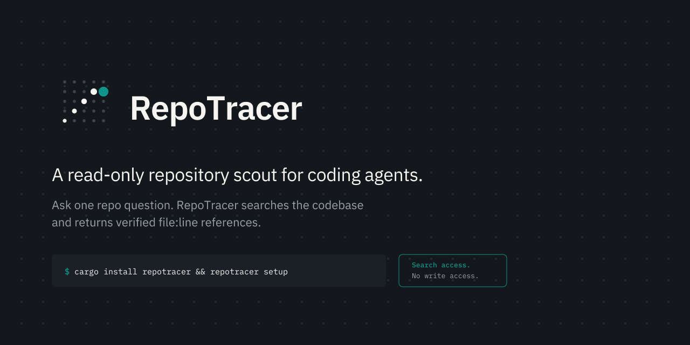
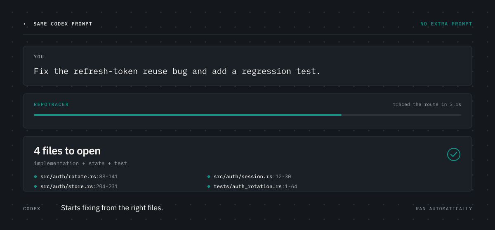
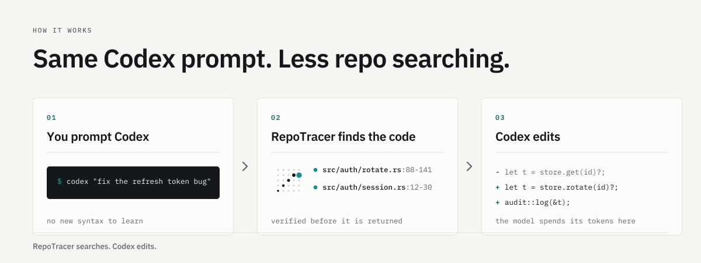
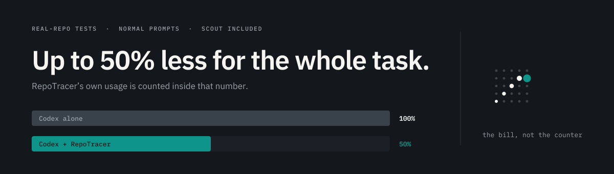

The identity for a read-only repository scout. Cool graphite and bone, one teal
accent used as a highlighter, IBM Plex throughout, and three motifs pulled straight out of the
mark. Full rules in BRAND.md; tokens in brand/tokens.css.
The direction, applied
Install once. Make Codex cost less.
Keep prompting Codex normally. When a task needs repo search, RepoTracer finds the right files first and hands back verified locations.
One loud thing per viewport: the accent lives in the hit dots and the prompt caret, nowhere else. The lattice is texture, never behind body copy.
The mark

A 5×5 field of files, most of it dim. A trail of dots ascends through it, each larger than the last, terminating in a single solid teal hit. The repository stays untouched, one path gets followed, one location comes back verified — and the growing dots give the mark a direction.
Clear space & lockups

Clear space on every side equals the lattice pitch — 15% of the mark's width. The wordmark is IBM Plex Sans SemiBold at −0.022em, outlined to paths in every shipped file, so it never depends on a font loading.
Color
Type
One superfamily, three roles. Mono is not decoration — it marks what the machine produced: commands, paths, line ranges, measured numbers. If a human wrote it, it is Sans.
Motifs
The dot lattice
The mark's field, scaled to a 40px pitch, as page texture. Hero and benchmark sections only. Never behind body copy.
The hit chip
Every file:line anywhere — product, docs, site — renders as mono text with a teal dot and a muted line range.
The ascending trail
Growing dots as a step or progress indicator — the mark’s own device reused. The active step is the accent.



Moving the site over
| Step | Change |
|---|---|
| 1 | Replace the :root block in style.css with brand/tokens.css. |
| 2 | Swap the font links to IBM Plex Sans + IBM Plex Mono. --font-sans / --font-mono are already tokenized. |
| 3 | Repoint every --blue (#2f5cff) usage to --accent — then delete all but one per screen. |
| 4 | Add .rt-lattice to the hero and benchmark sections only. |
| 5 | Render every file path as .rt-hit. |
| 6 | Header logo → assets/logo-lockup.svg. Favicon → assets/favicon.svg. OG image → assets/social-preview.png. |